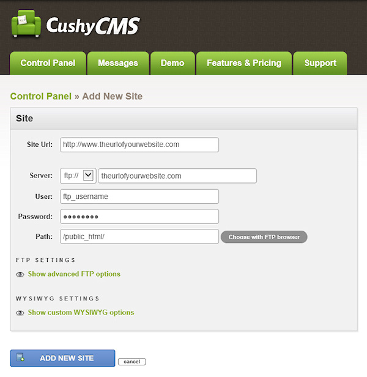
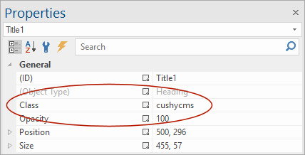
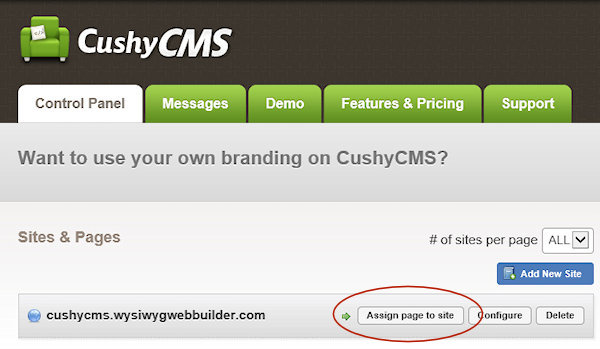
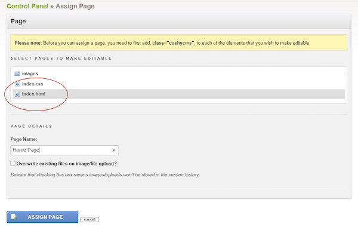
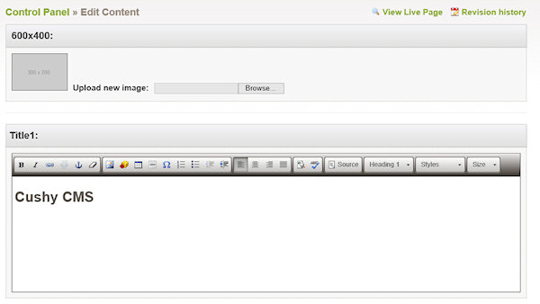
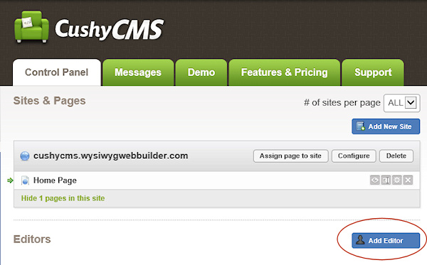

How to integrate CushyCMS?
CushyCMS is a simple, powerful, hosted Content Management System, it lets you set pre-defined areas on web pages that can later be edited after the page has been published. CushyCMS provides an easy to use interface for clients and requires no installation of extra software on the server, it doesn't require PHP or ASP.
CushyCMS may be useful for web designers that want to allow their clients to edit content online safely without the need to share/modify the WWB project.
CushyCMS supports designer and editor accounts. The designer account allows you to setup the site details, like Site URL, FTP account and assign pages. The editor account is for clients (or yourself) to make changes to the website via using an easy to use interface.
CushyCMS offers free and premium (paid) accounts.
Create a CushyCMS (developer) account
Go to the website: https://www.cushycms.com/ and click 'Sign Up'. Configure the site details, like the Site URL, FTP account and page location. Further details about the setup can be found in the CushyCMS documentation.
CushyCMS is a simple, powerful, hosted Content Management System, it lets you set pre-defined areas on web pages that can later be edited after the page has been published. CushyCMS provides an easy to use interface for clients and requires no installation of extra software on the server, it doesn't require PHP or ASP.
CushyCMS may be useful for web designers that want to allow their clients to edit content online safely without the need to share/modify the WWB project.
CushyCMS supports designer and editor accounts. The designer account allows you to setup the site details, like Site URL, FTP account and assign pages. The editor account is for clients (or yourself) to make changes to the website via using an easy to use interface.
CushyCMS offers free and premium (paid) accounts.
Create a CushyCMS (developer) account
Go to the website: https://www.cushycms.com/ and click 'Sign Up'. Configure the site details, like the Site URL, FTP account and page location. Further details about the setup can be found in the CushyCMS documentation.
Define editable areas/objects on a web page
To make an area editable with Cushy CMS, you will have to set the 'class' property of the object to 'cushycms'.
In WB14 (and newer) most objects have a 'class' property which makes this very easy. Simply type 'cushycms' in the class input box.
To make an area editable with Cushy CMS, you will have to set the 'class' property of the object to 'cushycms'.
In WB14 (and newer) most objects have a 'class' property which makes this very easy. Simply type 'cushycms' in the class input box.


Note that CushyCMS works best with flexible layouts using for example the layout grid because in that case the layout will automatically adjust when adding more text. For fixed layouts, text cannot become larger than the predefined area.
Publish the page
Publishing a web page with CushyCMS integration works no different than with other pages, simply upload the page to the server as usual.
Publishing a web page with CushyCMS integration works no different than with other pages, simply upload the page to the server as usual.
Assign the page to CushyCMS
In your CushyCMS account go to Sites & Pages and and click Assign page to site
In your CushyCMS account go to Sites & Pages and and click Assign page to site

Select the page you have just published, enter a page name and click Assign Page.

Now you can select the page in the Sites & Pages overview and edit the content areas!

CushyCMS will use the ID or 'Title' property of the object for the title name in the editor.
Notes:
CushyCMS will make the changes directly to the HTML files on the server. So, even if you close your CushyCMS account, the website will not be affected. However, this also means that if you re-publish the page via WYSIWYG Web Builder that these changes will be overwritten! So, please be careful with that!
Via Revisions history in the CushyCMS control panel you can quickly go back to a previous version of the page.
CushyCMS will make the changes directly to the HTML files on the server. So, even if you close your CushyCMS account, the website will not be affected. However, this also means that if you re-publish the page via WYSIWYG Web Builder that these changes will be overwritten! So, please be careful with that!
Via Revisions history in the CushyCMS control panel you can quickly go back to a previous version of the page.
Create an editor account
Editors are able to change content on pages you assign them to. They will get a simplified interface with only the options they can change.
Editors are able to change content on pages you assign them to. They will get a simplified interface with only the options they can change.

For more details about CushyCMS please visit their website:
https://www.cushycms.com/
https://www.cushycms.com/